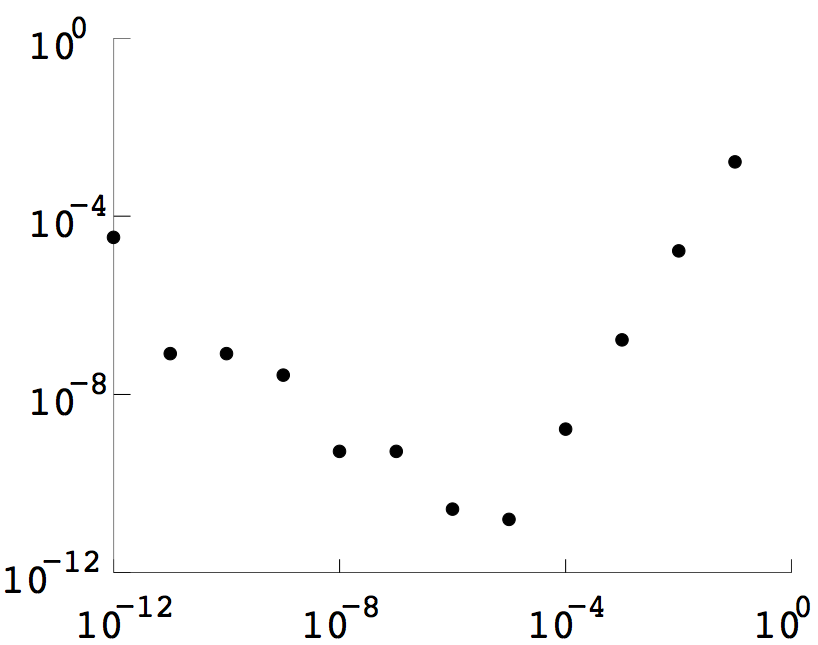
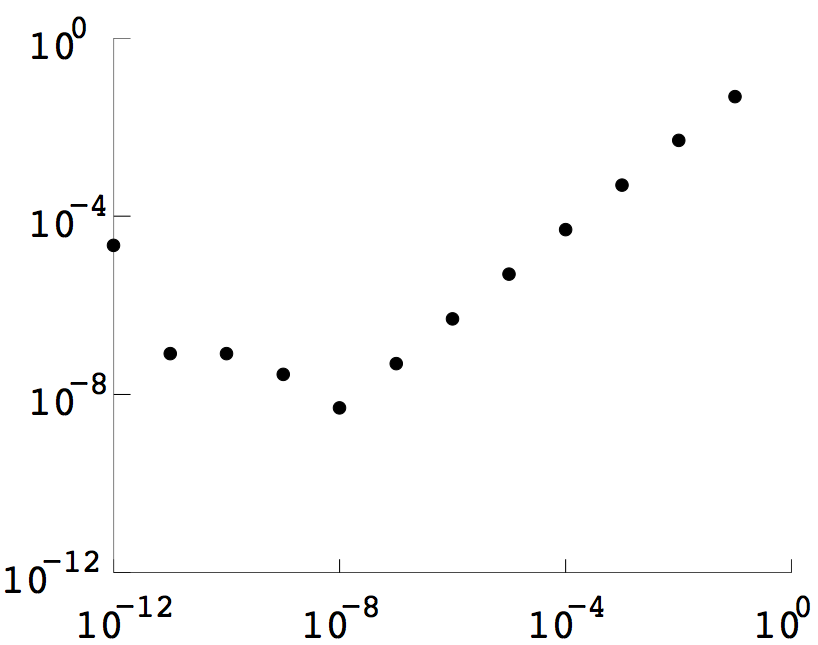
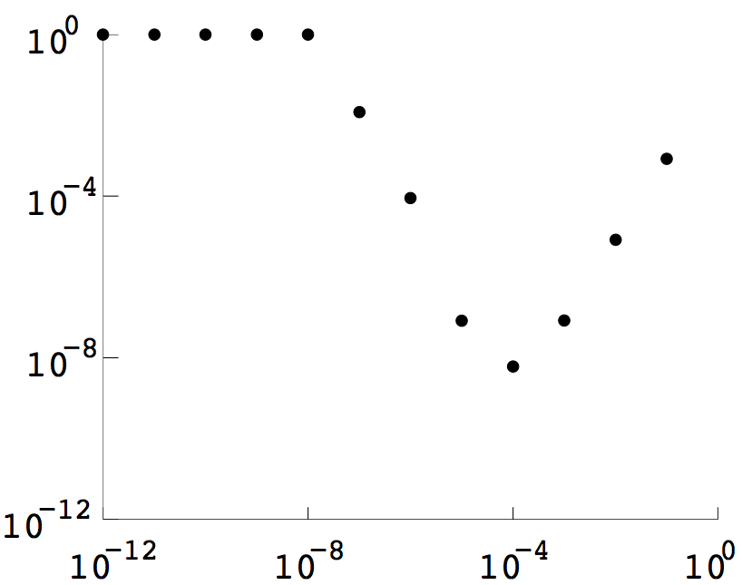

COMPUTER PROBLEMS 5.1
\(\def\ds{\displaystyle} \)
1 Double precision floating-point computation of the quotient
\[\frac{\sin h -\cos h -(\sin(-h)-\cos(-h))}{2h}\] for \(h=10^{-1},\ldots,
10^{-12}\), yields the table
\[\begin{array}{cc}
h&\text{error}\\
0.10000000000000& 0.00166583353172\\
0.01000000000000& 0.00001666658333\\
0.00100000000000& 0.00000016666662\\
0.00010000000000& 0.00000000166711\\
0.00001000000000& 0.00000000001565\\
0.00000100000000& 0.00000000002676\\
0.00000010000000& 0.00000000052636\\
0.00000001000000& 0.00000000052636\\
0.00000000100000& 0.00000002722922\\
0.00000000010000& 0.00000008274037\\
0.00000000001000& 0.00000008274037\\
0.00000000000100& 0.00003338943111\\
\end{array}\]
The same data is plotted below. Note that the minimum occurs at \(h=10^{-5}\), in rough
agreement with the theory in Section 5.1.2.

3 Double precision floating-point computation of the quotient
\[\frac{\sin h -\cos h -(\sin(0)-\cos(0))}{h}\] for \(h=10^{-1},\ldots,
10^{-12}\), yields the table
\[\begin{array}{cc}
h&\text{error}\\
0.10000000000000& 0.04829251368803\\
0.01000000000000& 0.00498329175014\\
0.00100000000000& 0.00049983329165\\
0.00010000000000& 0.00004999833314\\
0.00001000000000& 0.00000499998476\\
0.00000100000000& 0.00000050007321\\
0.00000010000000& 0.00000004943368\\
0.00000001000000& 0.00000000502476\\
0.00000000100000& 0.00000002828193\\
0.00000000010000& 0.00000008274037\\
0.00000000001000& 0.00000008274037\\
0.00000000000100& 0.00002212172012\\
\end{array}\]
The data is plotted below. Note that the minimum occurs at \(h=10^{-8}\), in rough
agreement with the predicted \(\sqrt{\epsilon_\text{mach}}\) from Exercise 18.

5 The quotient
\[\frac{\cos h - 2 + \cos(-h)}{h^2}\] for \(h=10^{-1},\ldots,
10^{-12}\) was calculated and compared with the correct second
derivative \(-\cos(0) = -1\). The error is plotted below. Note
that the minimum occurs at \(h=10^{-4}\approx
\epsilon_\text{mach}^{1/4}\).
